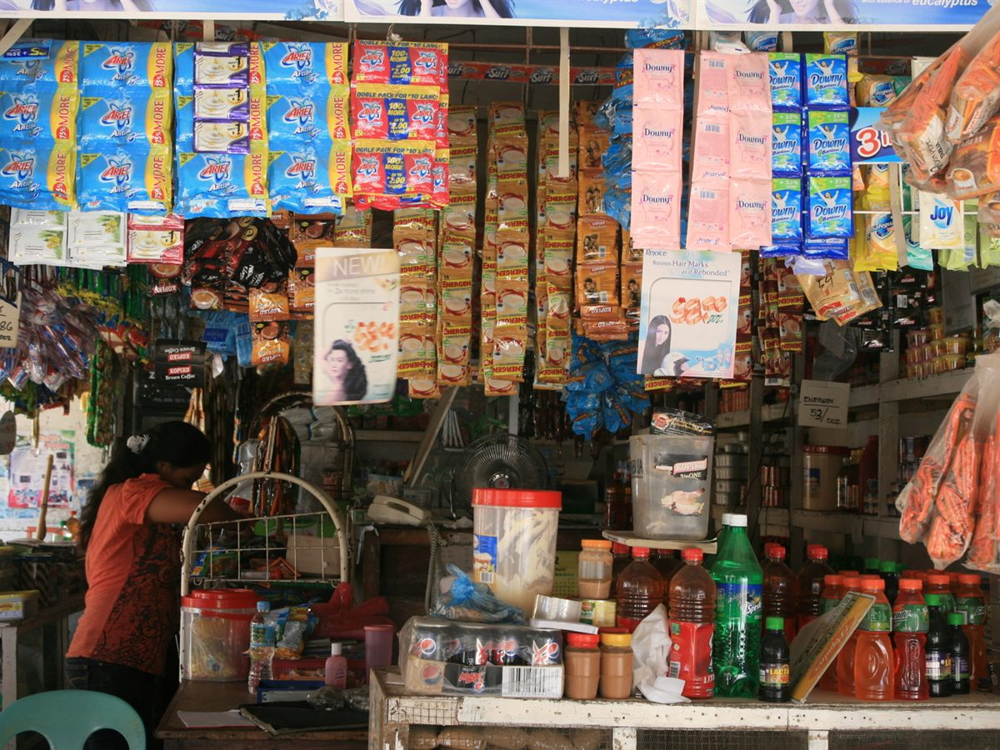

Tingi
Buying in small portions to get through one day at a time.
One sachet of shampoo, one cup of rice, one piece of candy. Tingi lets families with a daily budget buy only what they need today.
Ano’ng sasagutin ng kwentong ito
- Why do families buy one sachet or one cup at a time?
- What does a typical tingi purchase look like in our barangay?
- How does the tindera decide what to sell per piece?
Tingi comes from the Filipino word for selling by the piece. In a sari-sari store nothing has to be bought whole: one egg, three pieces of candy, a half-cup of rice, a splash of cooking oil poured into a small plastic bag.
The habit is old. A 2011 study of sachet marketing, citing the anthropologist William Henry Scott, notes that sixteenth-century chroniclers saw small-portion selling as standard practice, and that the Tagalog word alig-ig described buying a little at a time. The same study says tingi became a survival strategy for Filipinos after World War II, when so many were starting over with almost nothing.
For many families, money arrives a little at a time, so spending has to happen the same way. A whole kilo of rice or a full bottle of shampoo asks for money that is not in the pocket today. One cup, one sachet, one piece does not.
Behind the counter, the tindera does the work that makes this possible. She buys in larger amounts, breaks them down into small portions, and earns a small margin on each one. She is open early and late, and she is a few steps from your door.
But tingi has two sides. It is a kindness that keeps a household going, and it is also a limit of being poor. A P&G executive interviewed for one study put it plainly: the bigger the pack, the lower the price per unit, but the tradeoff is the cash needed all at once. A family that cannot pay that cash up front buys small. “Sige, tingi lang” is a practical answer and a quiet compromise at the same time.

“Isang sachet lang? Sige, tingi lang.”
Pinagkunan
Sy-Changco, J. A., Pornpitakpan, C., Singh, R., & Bonilla, C. M. (2011). Managerial insights into sachet marketing strategies and popularity in the Philippines. Asia Pacific Journal of Marketing and Logistics, 23(5), 755–772. https://doi.org/10.1108/13555851111183129
Pahina 1 / 5